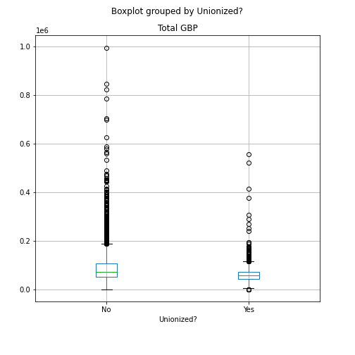
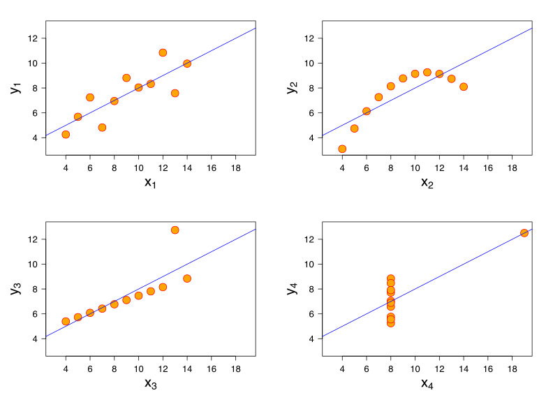

Data exploration and Preprocessing
Last updated on 2025-07-08 | Edit this page
Overview
Questions
- How can I read in data to Pandas?
- How can I access specific sections of my data?
- How does Pandas store data in rows and columns?
- How can I clean up messy data?
- How can I learn more about missing values, distributions and structures in my data?
Objectives
- Know the difference between a Series and a Dataframe
- Know how to use
loc[]to access data - Know how to apply basic data cleaning operations
- Know how to use some more sophisticated Pandas functions to explore and manipulate data
- Know some techniques for preparing your data for machine learning
Introduction
You’ve seen briefly how to use Pandas to read in a data file when we looked at the Penguin data. Real-world datasets are often - usually - nearly always? - quite messy; so much so that data scientists spend the majority of their time organising and cleaning data 1.
We’re going to work with a real dataset from an annual salary survey from the website askamanager.org. Have a look at the website and browse the questions, then read in the data file.
PYTHON
import pandas as pd
# Read the raw salary-survey responses
survey_path = "data/AAM_salary_survey_2025_responses.csv"
survey_data = pd.read_csv(survey_path)A DataFrame contains labelled data. Each row and each column has a label. The labels are stored in an index.
OUTPUT
Index(['Timestamp', 'Age', 'Industry', 'Functional area of job', 'Job title',
'Additional context', 'Annual salary',
'Additional monetary compensation', 'Currency', 'Currency - other',
'Income - additional context', 'Country', 'State', 'City/region',
'Remote or on-site?', 'Unionized?', 'Years of experience',
'Years in field', 'Highest level of education', 'Gender', 'Race',
'Disabled?'],
dtype='object')OUTPUT
Timestamp ... Disabled?
0 4/8/2025 11:01:58 ... Yes
1 4/8/2025 11:02:05 ... No
2 4/8/2025 11:02:26 ... No
3 4/8/2025 11:02:30 ... No
4 4/8/2025 11:02:31 ... No
[5 rows x 22 columns]A DataFrame can contain a mix of data types.
We can see that there’s lots of interesting data in there. Here’s a small list of questions we might want to ask: - What’s the distribution of total income across all jobs? - Do unionised jobs earn more or less than non-unionised? - Does salary go up with age, years of experience, and education level? - Do people earning additional income tend to have higher base salaries?
We’ll work through these, learning some more Pandas and data manipulation skills along the way.
Use DataFrame.dtypes to show the datatypes of each
column
Each column in a DataFrame is a Series. Series contain labelled data too, but a Series can only contain a single data type.
OUTPUT
Timestamp object
Age object
Industry object
Functional area of job object
Job title object
Additional context object
Annual salary int64
Additional monetary compensation float64
Currency object
Currency - other object
Income - additional context object
Country object
State object
City/region object
Remote or on-site? object
Unionized? object
Years of experience object
Years in field object
Highest level of education object
Gender object
Race object
Disabled? object
dtype: objectPandas will try to work out what this should be, but sometimes does a
bad job. When it has a mixture of strings and numbers, it picks the most
generic type possible, which is object.
Select a value by its index label using loc[]
Note that the list of datatypes above is itself a Series! The index
labels are the column headings from survey_results, and the
values are the data types. We can pull out a single value with a label
from this series using the function loc[]
OUTPUT
dtype('O')Notice the square brackets!
Callout
The loc[] function is really useful, and confusing, and
we’ll see more of it later. For now, remember that it takes square
brackets, and it lets you access data by its label.
Select a column from a DataFrame with
["Column name"]
You can select a column with square brackets containing the column name.
OUTPUT
0 Nonprofits
1 Health Care
2 Engineering
3 Nonprofits
4 Education (Higher Education)
...
8229 Retail
8230 Government & Public Administration
8231 Government & Public Administration
8232 Education (Early/Primary/Secondary)
8233 Education (Higher Education)
Name: Industry, Length: 8234, dtype: objectThis is really a shortcut for
Used on a DataFrame, loc[] takes two arguments - the
first one is the rows you want and the second one is the columns. Just
like with lists, you can slice with start:stop, and missing
out either one uses the endpoints.
Cast a column to a different data type with
astype()
You can change the data type of a column by selecting the column and
calling astype(), with the desired type as an argument.
OUTPUT
0 Nonprofits
1 Health Care
2 Engineering
3 Nonprofits
4 Education (Higher Education)
...
8229 Retail
8230 Government & Public Administration
8231 Government & Public Administration
8232 Education (Early/Primary/Secondary)
8233 Education (Higher Education)
Name: Industry, Length: 8234, dtype: stringThis doesn’t modify the original, it makes a copy, so we haven’t yet
saved the result. What if we want to change the data types of all the
columns that contain objects to strings? (I have a hunch
this might come in handy later…) We could do this manually, but
I’m lazy, so let’s get the computer do the work.
You can change multiple columns at once by calling
astype() on the DataFrame and passing in a dictionary that
maps column names to data types. Here’s one way to build this
dictionary:
PYTHON
dtypes_dict = {}
# loop through the columns with dtype object and add them to a dictionary
for column_name in survey_data.dtypes[survey_data.dtypes == object].index:
dtypes_dict[column_name] = "string"
dtypes_dictOUTPUT
{'Timestamp': 'string', 'Age': 'string', 'Industry': 'string', 'Functional area of job': 'string', 'Job title': 'string', 'Additional context': 'string', 'Currency': 'string', 'Currency - other': 'string', 'Income - additional context': 'string', 'Country': 'string', 'State': 'string', 'City/region': 'string', 'Remote or on-site?': 'string', 'Unionized?': 'string', 'Years of experience': 'string', 'Years in field': 'string', 'Highest level of education': 'string', 'Gender': 'string', 'Race': 'string', 'Disabled?': 'string'}Now let’s use that to set the data types in our DataFrame. Remember that we need to save the results.
OUTPUT
Timestamp string[python]
Age string[python]
Industry string[python]
Functional area of job string[python]
Job title string[python]
Additional context string[python]
Annual salary int64
Additional monetary compensation float64
Currency string[python]
Currency - other string[python]
Income - additional context string[python]
Country string[python]
State string[python]
City/region string[python]
Remote or on-site? string[python]
Unionized? string[python]
Years of experience string[python]
Years in field string[python]
Highest level of education string[python]
Gender string[python]
Race string[python]
Disabled? string[python]
dtype: objectChallenge
Describe the key variables in this survey: - Which columns are categorical (nominal)? - Which are ordinal (have an inherent order)? - Which are numeric (continuous or discrete)?
Numeric: - Annual salary - Additional monetary compensation
Categorical: - Industry - Functional area of job - Job title - Remote or on-site? - Country - State - City/region - Currency and Currency - other
Ordinal: - Age - Years of experience - Years in field - Highest level of education
Note that numeric variables that are grouped into bins are ordinal when the bins are of different sizes!
Also highest level of education could be considered categorical, because it’s not easy to sort every value.
Find missing values with isna()
Do any of the columns have missing values? We can find them, count them up in each column, and sort the results as follows:
OUTPUT
Currency - other 8191
Income - additional context 7496
Additional context 6402
Additional monetary compensation 2108
State 1529
Race 91
Unionized? 85
Functional area of job 65
Disabled? 37
Industry 34
Gender 33
Remote or on-site? 26
Highest level of education 16
City/region 5
Job title 1
Age 0
Timestamp 0
Annual salary 0
Country 0
Currency 0
Years in field 0
Years of experience 0
dtype: int64Lots of the columns have missing values - even some columns that are
required in the survey, like Job title. What’s doing on
here?
Callout
Pandas read_csv() function does a lot of work under the
hood. From the documentation:
By default the following values are interpreted as NaN: “ “, “#N/A”, “#N/A N/A”, “#NA”, “-1.#IND”, “-1.#QNAN”, “-NaN”, “-nan”, “1.#IND”, “1.#QNAN”, “
”, “N/A”, “NA”, “NULL”, “NaN”, “None”, “n/a”, “nan”, “null “.
We also have the answer to our earlier question about the data type
of Additional monetary compensation. It contains
NaN values, which Pandas treats as a float64,
forcing the whole column to be float64.
How we should treat missing values depends on the analysis we want to do.
How should we deal with the missing values? In some cases the missing
data is irrelevant. Each column needs to be considered differently. For
example: - we don’t need Currency - other if there is a
value in the Currency column - we don’t care about
State unless we’re only looking at the US - We can safely
assume that a missing value in
Additional monetary compensation means £0 - if we want to
know whether Unionized? makes a difference to earnings, a
row with no value there is useless to us
Pandas has some useful functions for this.
Use fillna() to fill missing values in a column
With Additional monetary compensation we can replace
missing values with 0. We can also change the type to be
int64
Use dropna() on a DataFrame to remove rows or columns
with missing values
Challenge
Pandas has a useful function, dropna(). Use the docs
pages (by running help(survey_data.dropna) or typing
survey_data.drop_na( and Shift+Tab) to find how to drop
rows that have missing values in the Unionized? column.
Callout
Does dropping NAs disproportionately affect any subgroup
(e.g., a particular country)? Consider whether that matters for your
analysis.
Use value_counts to count occurrences of categorical
variables
Let’s get a sense of where the data is coming from. This is an American website, in English, so the top results shouldn’t be a surprise:
OUTPUT
Country
United States 6691
Canada 541
United Kingdom 444
Australia 141
Germany 68
Name: count, dtype: Int64What about the age column?
OUTPUT
Age
35-44 3403
25-34 2258
45-54 1597
55-64 711
18-24 88
65 or over 88
under 18 4
Name: count, dtype: Int64We want to know how income is distributed, but the income figures are in different currencies, and some people have additional income on top of their salaries, so we can’t compare directly. We’ll need to create a new feature from our existing data. Let’s see what currencies we’ve got.
OUTPUT
Currency
USD 6722
CAD 541
GBP 442
EUR 192
AUD 139
NZD 51
Other 36
JPY 9
SEK 8
CHF 7
ZAR 2
Name: count, dtype: Int64Currency uses three letter codes. We can work with that
to convert everyone’s earnings to the same currency using exchange rate
data.
But first, notice that we have 36 “Other”. Wouldn’t it be nice to see what those are?
Use loc[] with boolean masking to select values
according to logical rules
As well as labels, we can use loc[] to access data based
on logical conditions. This is called boolean indexing or masking. First
we create a mask:
OUTPUT
0 False
1 False
2 False
3 False
4 False
...
8229 False
8230 False
8231 False
8232 False
8233 False
Name: Currency, Length: 8149, dtype: booleanThis is a Series of booleans with the same index as
survey_data, containing True where the
Currency column contains “Other” and False everywhere
else.
Then we pass that mask into loc[] to tell it which rows
we want:
OUTPUT
Timestamp ... Disabled?
545 4/8/2025 11:20:01 ... No
690 4/8/2025 11:24:17 ... No
985 4/8/2025 11:36:03 ... No
1210 4/8/2025 11:45:27 ... No
2369 4/8/2025 12:42:14 ... No
2513 4/8/2025 12:51:16 ... No
3704 4/8/2025 14:28:43 ... No
3975 4/8/2025 15:06:03 ... Not sure / it's complicated
4701 4/8/2025 17:24:31 ... No
5377 4/8/2025 20:54:00 ... No
5414 4/8/2025 21:04:21 ... No
5643 4/8/2025 22:39:29 ... No
5860 4/9/2025 1:45:27 ... Not sure / it's complicated
5902 4/9/2025 2:58:14 ... No
5905 4/9/2025 2:59:47 ... No
5918 4/9/2025 3:25:56 ... No
5979 4/9/2025 4:45:59 ... No
6009 4/9/2025 5:32:34 ... No
6083 4/9/2025 6:58:28 ... No
6253 4/9/2025 9:10:41 ... Not sure / it's complicated
6320 4/9/2025 9:38:26 ... Yes
6348 4/9/2025 9:52:12 ... No
6431 4/9/2025 10:33:51 ... No
7117 4/9/2025 22:40:56 ... Not sure / it's complicated
7155 4/10/2025 0:36:14 ... No
7168 4/10/2025 1:21:24 ... No
7198 4/10/2025 5:23:30 ... No
7289 4/10/2025 9:52:42 ... No
7366 4/10/2025 12:09:19 ... No
7390 4/10/2025 12:52:34 ... Not sure / it's complicated
7689 4/12/2025 8:17:59 ... No
7805 4/14/2025 10:14:33 ... No
7965 4/17/2025 2:19:12 ... Not sure / it's complicated
8001 4/18/2025 1:43:20 ... No
8080 4/25/2025 18:34:12 ... No
8186 5/14/2025 2:35:42 ... No
[36 rows x 22 columns]But we’re really only interested in one column -
Currency - other. We can pass that into loc as
well to just get a Series containing the elements of interest, and then
count the values like before:
OUTPUT
Currency - other
SGD 6
NOK 5
MXN 2
Sek 2
NZD 2
AED 2
PLN 2
CZK 2
TTD 1
INR 1
DKK (danish crowns) 1
BRL 1
INR Indian Rupee 1
SEK 1
DKK 1
Sfr 1
HUF 1
KES 1
MYR 1
IDR 1
Rupees 1
Name: count, dtype: Int64There aren’t many of each - 6 Singaporean Dollars, 5 Norwegian Kroners, 2 UAE Dirhams, etc. At this point we have to make a decision about how much we care about this fairly small number of values. We could decide it’s not worth the effort, but we’re going to be thorough and clean up these values, even though it’s a bit fiddly, because it’s a great chance to practice some more Pandas skills!
Let’s tidy up the Currency column. The three letter
codes in our Currency - other column look valid, so let’s
copy them straight over to Currency.
This is going to take a few steps: - find the rows where the length
of the Currency - other field is 3 - capitalise them, to
catch that pesky Swiss Franc (Sfr) - copy them to the
Currency column in the same rows
Pandas can run str functions on string columns
Finding the length of a string can be done efficiently with Pandas
str package. To make a Series containing all the
lengths:
We can turn curr_lengths into a boolean mask like
this:
OUTPUT
0 <NA>
1 <NA>
2 <NA>
3 <NA>
4 <NA>
...
8229 <NA>
8230 <NA>
8231 <NA>
8232 <NA>
8233 <NA>
Name: Currency - other, Length: 8149, dtype: booleanChallenge
Use boolean masking to find the values for Currency
corresponding to answers to Currency - other that are
exactly 3 characters long.
As a simple but incomplete sanity check, we know they should all be “Other”!
OUTPUT
545 Other
690 Other
1210 Other
2369 Other
2513 Other
3704 Other
3975 Other
4701 Other
5377 Other
5414 Other
5643 Other
5902 Other
5905 Other
5918 Other
5979 Other
6009 Other
6083 Other
6253 Other
6320 Other
6348 Other
6431 Other
7117 Other
7155 Other
7168 Other
7198 Other
7289 Other
7366 Other
7689 Other
7805 Other
7965 Other
8001 Other
8080 Other
8186 Other
Name: Currency, dtype: stringChallenge (continued)
Can you figure out, or guess, how to make those elements all upper case?
Use the function str.upper():
OUTPUT
545 TTD
690 INR
1210 NOK
2369 MXN
2513 SEK
3704 SEK
3975 NOK
4701 NZD
5377 BRL
5414 NZD
5643 SGD
5902 DKK
5905 SEK
5918 NOK
5979 CZK
6009 HUF
6083 SFR
6253 NOK
6320 PLN
6348 KES
6431 MXN
7117 MYR
7155 IDR
7168 SGD
7198 SGD
7289 SGD
7366 NOK
7689 SGD
7805 AED
7965 CZK
8001 SGD
8080 PLN
8186 AED
Name: Currency - other, dtype: stringChallenge (continued)
Finally, use those values to replace the original values in the
Currency column.
If we did those last few steps correctly, we should have far fewer “Other” values:
OUTPUT
Currency - other
DKK (danish crowns) 1
INR Indian Rupee 1
Rupees 1
Name: count, dtype: Int64Good. The last few we’ll have to do manually. Let’s assume that “Rupees” also refers to Indian rupees (and not Mauritius, Nepal, Pakistan, Sri Lanka, or any of the other countries with a currency called Rupees).
Challenge
Can you use what you’ve learned so far to fix the remaining values in
the Currency column, based on the answers in the
Currency - other column?
You need to locate a single value, and set it to the desired value.
First think about how to find the row you’re interested in. Then which
column you want. Then pass both into loc[]
OK, time to do the conversions. The U.K. government publishes average
annual GBP exchange rates on its website. You can find the data from
March 2025 in the file data/average_csv_2025-3.csv.
PYTHON
# Read the FX-rate file (average 2025 exchange rates)
gbp_conversions = pd.read_csv("data/average_csv_2025-3.csv", index_col="Country")
gbp_conversions.head()OUTPUT
Unit Of Currency ... Currency Units per £1
Country ...
Abu Dhabi Dirham ... 4.6865
Albania Lek ... 118.5071
Algeria Dinar ... 171.2515
Angola Readj Kwanza ... 1142.7772
Antigua E Caribbean Dollar ... 3.4492
[5 rows x 4 columns]OUTPUT
Index(['Unit Of Currency', 'Currency Code',
'Sterling value of Currency Unit £', 'Currency Units per £1'],
dtype='object')Let’s get this ready to map values from any currency into GBP: -
we’re only interested in two columns: Currency Code and
Sterling value of Currency Unit £ - we can give these
shorter names to save ourselves some typing - we want to look up values
using the currency code, so we should set that as the index, and then
it’s only one column that we’re interested in
PYTHON
gbp_map = gbp_conversions.loc[:, ["Currency Code", "Sterling value of Currency Unit £"]]
gbp_map = gbp_map.rename(columns={"Currency Code": "Currency", "Sterling value of Currency Unit £": "Exchange rate"})
gbp_map = gbp_map.set_index("Currency")["Exchange rate"]
gbp_mapOUTPUT
Currency
AED 0.2134
ALL 0.0084
DZD 0.0058
AOA 0.0009
XCD 0.2899
...
VND 0.0000
XPF 0.0071
WST 0.2834
YER 0.0031
ZMW 0.0295
Name: Exchange rate, Length: 162, dtype: float64Check which values occur in a Series with isin()
Let’s check that all our currency codes appear in the exchange rate data.
OUTPUT
np.float64(0.9456375015339306)Only 95%! Let’s find the ones that are missing. We’ll need to use a
logical operator for negation, ~. This turns True to False
and False to True.
OUTPUT
Currency
GBP 442
SFR 1
Name: count, dtype: Int64That makes sense! The U.K. Government data doesn’t include a GBP-GBP exchange rate (we can probably work that one out in our heads).
Let’s add it manually to make our calculations easier
We can use these conversions to put every salary in GBP. We’ll also need to add any additional compensation to get the total.
Use map() to efficiently apply a function to every
element
First let’s convert the salary and additional compensation columns.
We can try to use gbp_map to get the exchange rates based
on currency codes
OUTPUT
pandas.errors.InvalidIndexError: Reindexing only valid with uniquely valued Index objectsUh oh! There’s a problem. Can you guess what’s happened here? It’s not obvious, but the error message gives a clue.
The exchange rates data contains some duplicate currencies, because some countries use the same currency (e.g. Bhutan uses INR). That means we have some duplciate values in the index, and Pandas doesn’t know which one we want - it doesn’t matter to Pandas that they’re the same!
You can check this with
OUTPUT
Currency
XOF 8
XCD 7
XAF 6
AED 3
XPF 3
..
VND 1
WST 1
YER 1
ZMW 1
GBP 1
Name: count, Length: 141, dtype: int64Remove duplicate values with drop_duplicates() or
duplicated()
As usual Pandas has a function that can help us here:
drop_duplicates(). We need to remove duplicates from the
index, not the values - otherwise we’d be removing currencies
with the same rate, not necessarily the same code.
We could use drop_duplicates() on the index, but we have
no good way to map that back to the values. We can also use the
duplicated() function on the index to find labels that are
duplicated, and then use that to filter the DataFrame.
There’s that negation operator again. We want to include labels that
aren’t duplicated, so we use ~ to negate the boolean mask
returned by duplicated(). We also told duplicated to ignore
the first occurrence of each label with keep='first'.
OUTPUT
Currency
AED 1
ALL 1
DZD 1
AOA 1
XCD 1
..
VND 1
WST 1
YER 1
ZMW 1
GBP 1
Name: count, Length: 141, dtype: int64That’s better!
Now we can use map() to convert the currency values to
GBP:
OUTPUT
0 0.7836
1 1.0000
2 0.7836
3 0.7836
4 0.5654
...
8229 1.0000
8230 0.7836
8231 0.7836
8232 0.7836
8233 1.0000
Name: Currency, Length: 8149, dtype: float64We can add new columns to our DataFrame containing the converted
amounts. When we’re adding columns we should use loc[]:
PYTHON
survey_data.loc[:, "Annual salary GBP"] = survey_data["Annual salary"] * survey_data["Currency"].map(gbp_map)
survey_data.loc[:, "Additional monetary compensation GBP"] = survey_data["Additional monetary compensation"] * survey_data.loc[:, "Currency"].map(gbp_map)
survey_data.loc[:, "Total GBP"] = survey_data["Annual salary GBP"] + survey_data["Additional monetary compensation GBP"]Now we’re finally ready to plot the distribution we’re interested in: a histogram of total compensation in GBP.
PYTHON
import matplotlib.pyplot as plt
plt.figure(figsize=(8,5))
plt.hist(survey_data["Total GBP"], bins=50, edgecolor='black')
plt.show()
Ah. Looks like almost all the values are condensed into a single band, but the axis range is huge, because someone claims to earn around £800 million.
Let’s have a quick look at the stats. Explore the values with describe:
OUTPUT
count 8.148000e+03
mean 1.992544e+05
std 9.427335e+06
min 0.000000e+00
25% 5.060330e+04
50% 7.002600e+04
75% 1.018680e+05
max 8.478568e+08
Name: Total GBP, dtype: float64Challenge
Can you pull out the row containing the maximum value of
Total GBP and print it as a column?
You can use survey_data["Total GBP"].max() to find the
maximum value, and then use loc[] to select the row with
that value.
Use T to flip the orientation from a row to a column
OUTPUT
7708
Timestamp 4/12/2025 12:37:12
Age 55-64
Industry Hospitality & Events
Functional area of job Property or Construction
Job title Program Manager
Additional context <NA>
Annual salary 1082000000
Additional monetary compensation 2000
Currency USD
Currency - other <NA>
Income - additional context <NA>
Country United States
State Washington
City/region Pierce County
Remote or on-site? On-site
Unionized? No
Years of experience 31-40 years
Years in field 11-20 years
Highest level of education Some college
Gender Man
Race White
Disabled? No
Annual salary GBP 847855200.0
Additional monetary compensation GBP 1567.2
Total GBP 847856767.2Remove outliers
A property and construction program manager for a hospitality and events company on a salary of $1 billion seems unlikely to me. How does it compare to the next few largest values?
PYTHON
# get the highest five values in Total GBP
survey_data.sort_values("Total GBP", ascending=False).head(15)OUTPUT
Timestamp ... Total GBP
7708 4/12/2025 12:37:12 ... 8.478568e+08
6888 4/9/2025 16:04:03 ... 7.262507e+07
4109 4/8/2025 15:26:31 ... 1.222416e+07
2715 4/8/2025 13:05:27 ... 3.844906e+06
5739 4/8/2025 23:47:05 ... 1.030434e+06
1209 4/8/2025 11:45:22 ... 9.951720e+05
1161 4/8/2025 11:43:16 ... 8.462880e+05
3845 4/8/2025 14:47:32 ... 8.227800e+05
4884 4/8/2025 18:14:58 ... 7.840717e+05
2113 4/8/2025 12:24:17 ... 7.052400e+05
2531 4/8/2025 12:52:21 ... 7.000000e+05
3498 4/8/2025 14:05:22 ... 6.268800e+05
5353 4/8/2025 20:46:59 ... 5.892672e+05
5848 4/9/2025 1:31:47 ... 5.798640e+05
1570 4/8/2025 11:59:31 ... 5.649756e+05
[15 rows x 25 columns]The max is more than 10 times the next largest value. I think we can safely delete at least the largest row, and maybe anything else over, say, £1 million.
Callout
Survey data, particularly when collected online, is notoriously noisy. Some people are stupid, some peopel make mistakes, and some just like to mess with surveys. As a results, there is usually a reasonable percentage of responses that can’t be trusted. If you’re lucky, these are obvious.
This is sometimes know as the “Lizardman Factor” or “Lizardman’s constant”, named after a 2012 survey that found that 4% of people believed that shape-shifting reptilian people have taken on human form and now control our world.
Let’s check the distribution again, now that we’ve removed the outliers:
PYTHON
plt.figure(figsize=(8,5))
plt.hist(survey_data["Total GBP"], bins=50, edgecolor='black')
plt.show()
That’s better! We can see a more reasonable distribution of salaries, with a long thiin tail towards the top end.
Compare salaries by country using groupby()
Let’s look at the average salary by country. We’ll use
groupby() to group the data by country, and then calculate
the mean of the total compensation for each group.
PYTHON
country_salary = survey_data.groupby("Country")["Total GBP"].mean().sort_values(ascending=False)
country_salaryOUTPUT
Country
Hong Kong 270342.0000
Caribbean 239487.7500
UAE 220228.8000
Europe for US company 215490.0000
Finlanf 193614.0000
...
Vietnam 9707.2368
India 7723.6500
The country of Europe 1352.5920
Trinidad and Tobago 623.7000
Indonesia 0.0000
Name: Total GBP, Length: 78, dtype: float64We can plot this as a bar chart to make it easier to see the differences:
PYTHON
plt.figure(figsize=(10,10), layout="constrained")
country_salary.plot(kind='barh')
plt.yticks(fontsize=4)OUTPUT
(array([ 0, 1, 2, 3, 4, 5, 6, 7, 8, 9, 10, 11, 12, 13, 14, 15, 16,
17, 18, 19, 20, 21, 22, 23, 24, 25, 26, 27, 28, 29, 30, 31, 32, 33,
34, 35, 36, 37, 38, 39, 40, 41, 42, 43, 44, 45, 46, 47, 48, 49, 50,
51, 52, 53, 54, 55, 56, 57, 58, 59, 60, 61, 62, 63, 64, 65, 66, 67,
68, 69, 70, 71, 72, 73, 74, 75, 76, 77]), [Text(0, 0, 'Hong Kong'), Text(0, 1, 'Caribbean'), Text(0, 2, 'UAE'), Text(0, 3, 'Europe for US company '), Text(0, 4, 'Finlanf'), Text(0, 5, 'México '), Text(0, 6, 'Nigeria'), Text(0, 7, 'Israel'), Text(0, 8, 'Switzerland'), Text(0, 9, 'Mongolia'), Text(0, 10, 'Saudi Arabia'), Text(0, 11, 'Aotearoa New Zealand '), Text(0, 12, 'Ghana'), Text(0, 13, 'Switzerland '), Text(0, 14, 'Jamaica'), Text(0, 15, 'United States'), Text(0, 16, 'switzerland'), Text(0, 17, 'Luxembourg '), Text(0, 18, 'Czech Republic'), Text(0, 19, 'United Arab Emirates'), Text(0, 20, 'Denmark'), Text(0, 21, 'Ireland'), Text(0, 22, 'new zealand'), Text(0, 23, 'Singapore'), Text(0, 24, 'New Zealand '), Text(0, 25, 'france'), Text(0, 26, 'Luxembourg'), Text(0, 27, 'Australia'), Text(0, 28, 'China'), Text(0, 29, 'the Netherlands'), Text(0, 30, 'Norway'), Text(0, 31, 'Austria '), Text(0, 32, 'Canada'), Text(0, 33, 'Netherlands '), Text(0, 34, 'Italy'), Text(0, 35, 'Netherlands'), Text(0, 36, 'Southeast Asia'), Text(0, 37, 'United Kingdom'), Text(0, 38, 'NZ'), Text(0, 39, 'Austria'), Text(0, 40, 'New Zealand'), Text(0, 41, 'Kenya'), Text(0, 42, 'Finland'), Text(0, 43, 'South Africa'), Text(0, 44, 'Germany'), Text(0, 45, 'Belgium'), Text(0, 46, 'The Netherlands '), Text(0, 47, 'Portugal'), Text(0, 48, 'France'), Text(0, 49, 'Hungary'), Text(0, 50, 'North Macedonia'), Text(0, 51, 'Greece '), Text(0, 52, 'South Korea'), Text(0, 53, 'I live in Canada, but my employer is in the USA'), Text(0, 54, 'Sweden'), Text(0, 55, 'Sweden '), Text(0, 56, 'Spain'), Text(0, 57, 'Finland '), Text(0, 58, 'The Netherlands'), Text(0, 59, 'Remotely moving in Southeast Asia'), Text(0, 60, 'Aotearoa New Zealand'), Text(0, 61, 'il'), Text(0, 62, 'argentina '), Text(0, 63, 'Mexico'), Text(0, 64, 'Brazil'), Text(0, 65, 'Poland'), Text(0, 66, 'Internationally - multiple countries as needed '), Text(0, 67, 'Japan'), Text(0, 68, 'Belgium '), Text(0, 69, 'Japan '), Text(0, 70, 'Latvia'), Text(0, 71, 'Malaysia'), Text(0, 72, 'Czechia'), Text(0, 73, 'Vietnam'), Text(0, 74, 'India'), Text(0, 75, 'The country of Europe'), Text(0, 76, 'Trinidad and Tobago'), Text(0, 77, 'Indonesia')])OUTPUT
AttributeError: module 'matplotlib.pyplot' has no attribute 'layout'We can see that a lot of the countries have been entered manually, so the data is messy. We won’t clean these up now. Note that in a rigorous analysis you would want to normalise for cost of living, purchasing-power parity (PPP), and so on.
Use groupby() to perform calculations on groups of
data
Let’s move onto our next question: - Do unionised jobs earn more or less than non-unionised?
OUTPUT
Unionized?
No 87951.627244
Yes 64302.693696
Name: Total GBP, dtype: float64At first glance, the unionised jobs earn less Let’s look in more detail with a box plot.
PYTHON
# plot a box-and-whisker diagram of the total compensation by union status
plt.figure(figsize=(6,4))
survey_data.boxplot(
by="Unionized?",
column="Total GBP",
)
plt.show() That seems to hold up. We could run some statistical tests to figure out
for sure, but let’s move on.
That seems to hold up. We could run some statistical tests to figure out
for sure, but let’s move on.
Use OrdinalEncoder() for features that have an implicit
order
Our next question was: - Does salary go up with age, years of experience, and education level?
Salary is a numeric variable, but age, years of experience, and
education level are all categorical variables with an implicit order. We
can use the OrdinalEncoder from scikit-learn to convert
these into numeric values that we can use in our analysis.
OrdinalEncoder is slightly more complicated than the LabelEncoder we saw on Day 1. We want to specify the order of our categories to respect the underlying order, so we have to manually define the categories based on what we know about the data:
PYTHON
ordinal_cols = ["Age", "Years of experience", "Years in field", "Highest level of education"]
for col in ordinal_cols:
print(f"{col}:\n{survey_data[col].value_counts()}\n")OUTPUT
Age:
Age
35-44 3400
25-34 2258
45-54 1596
55-64 709
18-24 88
65 or over 88
under 18 4
Name: count, dtype: Int64
Years of experience:
Years of experience
11-20 years 3311
21-30 years 1747
8-10 years 1222
5-7 years 761
31-40 years 593
2-4 years 334
41 years or more 119
1 year or less 56
Name: count, dtype: Int64
Years in field:
Years in field
11-20 years 2547
8-10 years 1561
5-7 years 1355
2-4 years 1130
21-30 years 1005
31-40 years 272
1 year or less 239
41 years or more 34
Name: count, dtype: Int64
Highest level of education:
Highest level of education
Bachelor's degree 3387
Master's degree 2912
Doctorate 570
Professional degree (MD, JD, etc.) 447
Some college 435
...
Did not graduate high school 1
High school dropout 1
Canadian College Diploma 1
CPA designation w/Bachelor Degree 1
Master's + 1
Name: count, Length: 90, dtype: Int64- The categories for the two “Years…” columns are the same.
- The Education columns accepts free text, so it has lots of rare answers as well as the 7 default options. Let’s ignore all but the top 7
PYTHON
age_category = ["under 18", "18-24", "25-34", "35-44", "45-54", "55-64", "65 or over"]
experience_category = [
"1 year or less",
"2-4 years",
"5-7 years",
"8-10 years",
"11-20 years",
"21-30 years",
"31-40 years",
"41 years or more",
]
education_category = [
"Less than secondary",
"High school / secondary",
"Some college",
"Bachelor's degree",
"Master's degree",
"Professional degree (JD, MD, etc.)",
"Doctorate",
]We can then create an OrdinalEncoder with these categories:
PYTHON
from sklearn.preprocessing import OrdinalEncoder
ordinal_encoder = OrdinalEncoder(categories=[age_category, experience_category, experience_category, education_category])Now we can use this encoder to transform the ordinal columns in our
DataFrame. We’ll apply it to the columns age,
years_experience, and
highest_level_of_education, and save this data in a new
dataframe. We’ll also add the numeric data columns. And let’s not forget
to ignore the rows that contain the less common education answers!
PYTHON
ordinal_cols = ["Age", "Years of experience", "Years in field", "Highest level of education"]
survey_data_standard_education = survey_data[survey_data["Highest level of education"].isin(education_category)]
survey_data_encoded = survey_data_standard_education[["Annual salary GBP", "Additional monetary compensation GBP", "Total GBP"]].copy()
survey_data_encoded[ordinal_cols] = ordinal_encoder.fit_transform(survey_data_standard_education[ordinal_cols])Calculate correlations with DataFrame.corr()
Let’s calculate the correlations and see the relationships between
these variables. We can calculate the correlation matrix with
corr(), and visualise the results in a heatmap with
imshow():
PYTHON
# Calculate the correlation matrix
correlation_matrix = survey_data_encoded.corr()
fig, ax = plt.subplots(figsize=(10, 8), layout="constrained")
heatmap = ax.imshow(correlation_matrix, cmap='coolwarm')
ax.set_xticks(range(len(correlation_matrix.columns)))
ax.set_yticks(range(len(correlation_matrix.columns)))
ax.set_xticklabels(correlation_matrix.columns, rotation=45, ha='right')
ax.set_yticklabels(correlation_matrix.columns)
fig.colorbar(heatmap, ax=ax, orientation='vertical', label='Correlation Coefficient')OUTPUT
<matplotlib.colorbar.Colorbar object at 0x000001D6E5859010>This shows some interesting patterns. What do you notice?
- The strongest correlation is between
Annual salary GBPandTotal GBP -
Additional monetary compensation GBPis correlated withTotal GBP, but its contribution is weaker than the salary -
Annual salaryandAdditional monetary compensation GBPare at best weakly correlated with each other - The time fields, Age, Years of experience, and Years in field, form a cluster
- There appears to be no relationship between any of the time factors and the compensation factors
- Education level is not correlated with anything
Now let’s plot the relationships between these variables.
PYTHON
# Use matplotlib to plot Total compensation GBP against the other columns in survey_data_encoded
import matplotlib.pyplot as plt
fig, axs = plt.subplots(2, 3, figsize=(20, 10), layout="constrained")
def scatter_plot(ax, x_col, y_col, title):
ax.scatter(survey_data_encoded[x_col], survey_data_encoded[y_col], alpha=0.5)
ax.set_xlabel(x_col.replace("_", " ").title())
ax.set_ylabel(y_col.replace("_", " ").title())
ax.set_title(title)
scatter_plot(axs[0, 0], "Age", "Total GBP", "Total compensation vs. Age")
scatter_plot(axs[0, 1], "Years of experience", "Total GBP", "Total compensation vs. Years of experience")
scatter_plot(axs[0, 2], "Years in field", "Total GBP", "Total compensation vs. Years in field")
scatter_plot(axs[1, 0], "Highest level of education", "Total GBP", "Total compensation vs. Education level")
scatter_plot(axs[1, 1], "Additional monetary compensation GBP", "Annual salary GBP", "Additional compensation vs. Annual salary")
scatter_plot(axs[1, 2], "Additional monetary compensation GBP", "Total GBP", "Total compensation vs. Annual salary")
plt.show()Looking again at the relationship between salary and additional income, we can see that there is more structure than we might have thought at first. It looks like there are two trends: people with the highest incomes are less likely to have additional income; and as additional income goes up, salary increases slightly. We can’t tell any of this from the correlation alone.
Callout
Correlations and summary statistics are useful and powerful, but they can be misleading.
This is Anscombe’s quartet, a set of four datasets that have identical mean, variance, correlation and regression, but resoundingly varied structure.
{alt=‘Image of Anscombe’s quartet, showing four datasets with the same correlation but very different structures’} Attribution: Schutz(label using subscripts): Avenue - Anscombe.svg, CC BY-SA 3.0, https://commons.wikimedia.org/w/index.php?curid=9838454

Use PCA to visualise more complex structures
Principal-components analysis (PCA) lets us project many variables onto a 2-D plane while preserving as much variance as possible.
PYTHON
from sklearn.preprocessing import StandardScaler
from sklearn.decomposition import PCA
features = [
"Age",
"Years of experience",
"Years in field",
"Highest level of education",
"Total GBP",
]
X = survey_data_encoded[features]
X_scaled = StandardScaler().fit_transform(X)
# PCA
pca = PCA(n_components=2)
components = pca.fit_transform(X_scaled)
# Plot
plt.figure(figsize=(6,5))
scatter = plt.scatter(
components[:,0], components[:,1],
c=survey_data_encoded["Total GBP"], cmap="viridis", alpha=0.5
)
plt.colorbar(scatter, label="Compensation (GBP)")OUTPUT
<matplotlib.colorbar.Colorbar object at 0x000001D6FDFAE450>PYTHON
plt.xlabel("PC 1 (" + str(round(pca.explained_variance_ratio_[0]*100,1)) + "% var)")
plt.ylabel("PC 2 (" + str(round(pca.explained_variance_ratio_[1]*100,1)) + "% var)")
plt.title("PCA of salary & ordinal variables")
plt.tight_layout()
plt.show()
This plot shows the first two principal components of the data, with points coloured by total compensation. The axes represent the directions of maximum variance in the data.
We can try to understand what those directions are like this:
OUTPUT
array([[ 0.55808865, 0.58493097, 0.54763911, 0.02735323, 0.21385984],
[-0.10224567, -0.14076186, -0.00198261, 0.8150497 , 0.55264997]])The first component consists mostly of the time-based factors. The second component contains stronger contributions from education and total compensation.
Key Points
- Pandas is a powerful library for data manipulation and analysis.
- DataFrames are two-dimensional, labelled data containers that can contain mixed data types
- Series are one-dimensional, labelled data containers that can only contain a single data type
-
loc[]can be used to select combinations of rows and columns from a DataFrame - Use
loc[]to access data by label, or use boolean masking to select data based on logical conditions - Use
astype()to change the data type of a column - Use
isna()to find missing values, andfillna()to fill them - Use
dropna()to remove rows or columns with missing values - Use
value_counts()to count occurrences of categorical variables - Use
groupby()to perform calculations on groups of data - Use
map()to apply a function to every element in a Series - Use
OrdinalEncoder()to convert categorical variables with an implicit order into numeric values - Use
corr()to calculate correlations between variables - but don’t rely on correlations alone! - Use PCA to visualise complex structures in high-dimensional data